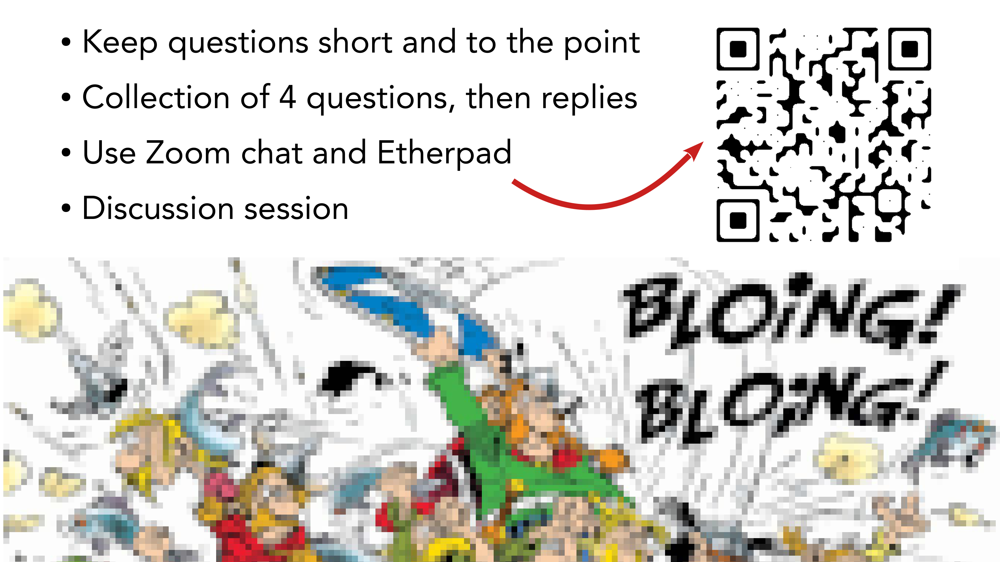

2 Large Language Models for the History, Philosophy and Sociology of Science (Workshop)
Overview
The workshop, “Large Language Models for the History, Philosophy and Sociology of Science,” convened to explore the application of advanced AI methods within historical, philosophical, and sociological inquiries into science. Adrian Wüthrich, Arno Simons, Michael Zichert, and Gerd Graßhoff collaboratively organised this distinguished event. Its genesis lay in two distinct, yet complementary, initiatives. Firstly, the Network Epistemology in Practice (NEPI) project, an ERC Consolidator Grant (Nr. 101044932), provided a foundational interest in training large language models on physics texts and analysing conceptual issues within the discipline. Secondly, Gerd Graßhoff, a long-standing advocate for AI integration in the history and philosophy of science, particularly for understanding scientific discovery processes, proposed a workshop on novel AI-assisted methodologies. These converging interests consequently led to the joint organisation of the current event.
The NEPI project specifically investigates the internal communication dynamics of the ATLAS collaboration at CERN, aiming to elucidate how such a prominent, large-scale research collaboration collectively generates new knowledge. This research employs both network analysis to map communication structures and semantic tools, including large language models, to trace the flow of ideas within these networks. The workshop attracted significant interest, receiving over 50 paper submissions, from which the organisers selected 16 for presentation. It quickly reached full capacity for in-person attendance and garnered a substantial online audience, totalling approximately 220 registered participants. The programme features keynotes from leading researchers: Pierluigi Cassotti and Nina Tahmasebi, who focus on large-scale text analysis for cultural and societal change, and Iryna Gurevych, who addresses the elevation of Natural Language Processing to the cross-document level. Logistical arrangements include structured question sessions, an Etherpad for comments, a dedicated discussion session, and various networking opportunities. Recording protocols ensure the capture of presentations for future dissemination on the NEPI YouTube channel, subject to presenter consent.
2.1 Workshop Genesis and Scope

The workshop, titled “Large Language Models for the History, Philosophy and Sociology of Science,” emerged from two distinct yet complementary initiatives. Adrian Wüthrich, Arno Simons, Michael Zichert, and Gerd Graßhoff collectively organised this event. One primary impetus stemmed from the Network Epistemology in Practice (NEPI) project, an ERC Consolidator Grant (Nr. 101044932). Within this project, Arno Simons pioneered the training of one of the earliest large language models specifically on physics texts, whilst Michael Zichert employed similar models to analyse conceptual issues prevalent in physics.
Concurrently, Gerd Graßhoff, a long-standing collaborator and proponent of AI integration within the history and philosophy of science, particularly for analysing scientific discovery processes, conceived a workshop focused on novel AI-assisted methodologies. Consequently, these converging interests led to a joint endeavour, culminating in the present workshop. The NEPI project specifically investigates the internal communication of the ATLAS collaboration at CERN, the particle physics laboratory. The researchers aim to understand how one of the largest and most prominent research collaborations collectively generates new knowledge. This investigation employs network analysis to elucidate communication structures and semantic tools, including large language models, to trace the flow of ideas within these intricate networks.
The call for papers for this workshop garnered significant interest, attracting over 50 submissions, from which the organisers selected 16 for presentation. On-site attendance quickly reached full capacity, whilst a substantial online audience also registered, bringing the total participation to approximately 220 individuals.
2.2 Recording Protocols and Consent

The workshop sessions are currently undergoing recording. Attendees provided their consent for this during the registration process. A single camera captures the proceedings, specifically directed towards the presenter. Audio recording relies on four microphones, supplemented by an iPhone serving as a backup audio recorder. Subject to the presenters’ explicit consent, the videos of the talks, encompassing the subsequent discussion, will be uploaded to the NEPI YouTube Channel following the workshop. Crucially, the discussion segments will feature only the audio and video of the presenter, ensuring the privacy of the audience. Individuals requiring further information or wishing to withdraw their consent should approach the organisers.
2.3 Workshop Logistics and Interaction Guidelines

Given the large group size and the limited time allocated for presentations and subsequent questions, participants are requested to keep their questions and comments concise and pertinent. Following each presentation, the organisers will collect up to four questions or comments, enabling the presenter to respond to them collectively, thereby optimising time. An Etherpad provides dedicated sections for each talk, alongside a general section, allowing participants to place their comments appropriately. Furthermore, a dedicated discussion session on the second day will facilitate the pooling and collective discussion of frequently arising questions and comments.
Beyond these formal sessions, the workshop offers ample opportunities for informal networking amongst researchers and fellows. These include generous lunch and coffee breaks, a modest reception, and a workshop dinner. Notably, seating for the dinner is highly limited, reserved exclusively for participants who received confirmation of their attendance. Coffee breaks and refreshments are available on-site. Lunch and the reception will take place in Room H 2051, located down the hall, one floor below the main workshop area.
2.4 Keynote 1: Large-scale Text Analysis for Cultural and Societal Change

The first keynote address, scheduled shortly, features Pierluigi Cassotti and Nina Tahmasebi from the University of Gothenburg. Nina Tahmasebi directs the “Change is Key” research programme, whilst Pierluigi Cassotti contributes as a researcher within the project. Their work has gained considerable recognition for its focus on semantic change detection. This research encompasses both technical aspects, such as the development of benchmarks, and broader methodological considerations, including the application of data science methods to questions within the humanities. This dual focus renders their expertise particularly relevant to the workshop’s objectives.
2.5 Keynote 2: Elevating NLP to the Cross-Document Level

Iryna Gurevych will deliver the second keynote address tomorrow late afternoon. She leads the Ubiquitous Knowledge Processing (UKP) Lab at the Technical University Darmstadt. Her research primarily concentrates on information extraction, semantic text processing, and machine learning. Crucially, her work also extends to the application of Natural Language Processing (NLP) techniques within the social sciences and humanities, aligning perfectly with the interdisciplinary focus of this workshop.